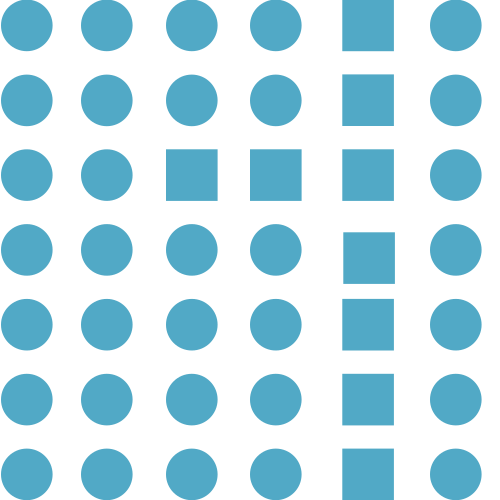
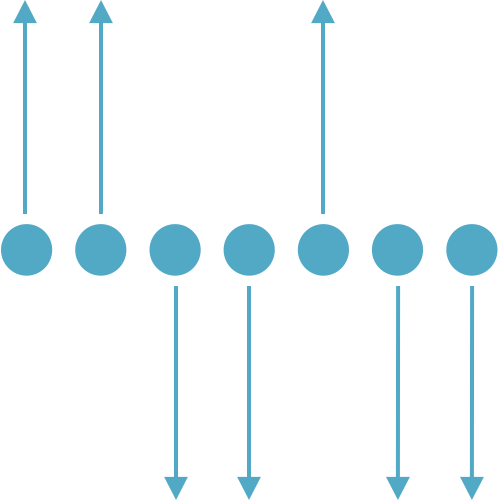
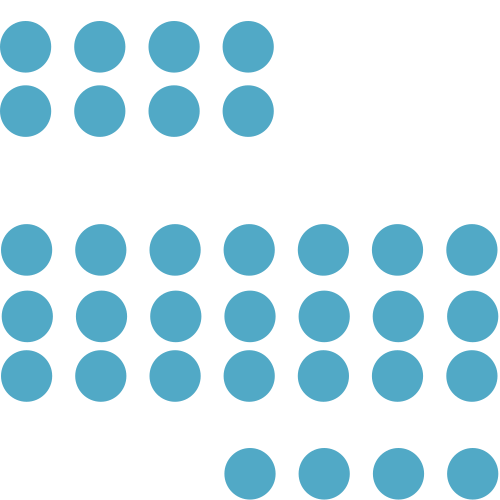
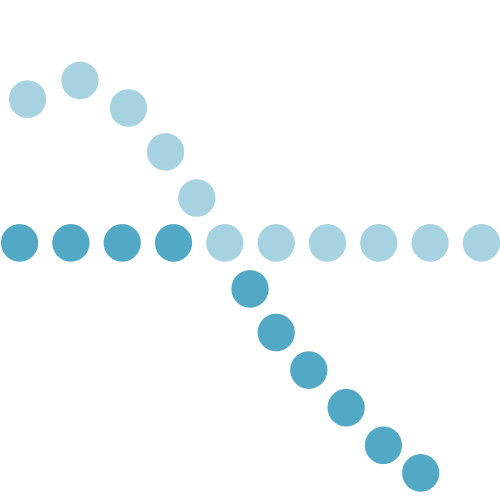

Pragnanz, or Good Figure
People will organize elements into the simplest pattern.
Figure/Ground
People perceive shapes as either the part in focus (the figure) or the background (the ground).
Similarity
Visual elements that are similar, such as shape, size and color, are perceived as related.

Closure
When looking at a complex arrangement, we tend to look for one recognizable pattern.

Symmetry
We see objects as symmetrical shapes that form around a center point.
Common Fate
Elements that change at the same time, or in the same direction, are seen as a group.

Proximity
Items that are close together are seen as a group.

Good Continuation
Items that form a straight line are seen as a group.

Law of Past Experience
At times, people see visual perceptions and organize based on past experience.